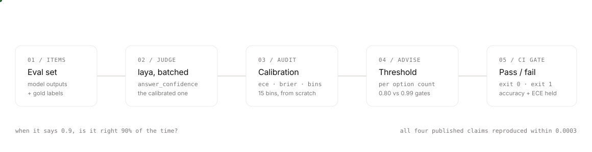

Judge every eval item for cents. Then check whether the confidence meant anything.
laya-evals scores eval sets with laya, an open System 1 decision model that runs on CPU, and audits the calibration before anyone automates on a threshold. It caught the gap upstream filed as #394: the same 0.81 confidence is solid for a 3-option question and a coin flip for 20 options.
View the repository
uv pip install laya-evals
$ uv run python scripts/check_regression.py \
--current current.json --baseline baseline.json
OK claims.xnli.en.measured: 0.8600 -> 0.8600 (delta +0.0000)
OK claims.massive_intent.non_en: 0.4510 -> 0.4510 (delta +0.0000)
OK suites.xnli.en.ece_15_bins: 0.0685 -> 0.0685 (goal min)
exit 0 — accuracy held, calibration held
reproduction pack
Every published number we could test, reproduced.
Four headline claims from the upstream benchmark table, re-run under the upstream notebook's exact protocol (seed 13, 20-option draws, first 300 rows per language, 14 MASSIVE and 15 XNLI languages) on CPU, against their T4. All four came back within 0.0003.
Claim
Published
Re-run
MASSIVE intent, English reproduces
0.783
0.7833
MASSIVE intent, 13 languages reproduces
0.451
0.4510
XNLI, English reproduces
0.860
0.8600
XNLI, 14 languages reproduces
0.731
0.7307
Verbatim artifacts and per-language detail live in results/reproduction.json. Deltas at most one item in 300. The tolerance rule is stated in the file.
how it works
Five steps, one honest number at each step.
01 / judge
A rubric, asked of every item in one batch
Choice, score and boolean questions ride a single laya forward pass. Each answer
carries answer_confidence, the calibrated quantity — not the entropy
score the API also returns.
02 / measure
Gold labels turn judgments into calibration data
confidence_outcome_pairs zips each decision with its reference answer,
producing the (confidence, outcome) pairs every metric downstream reads.
03 / audit
ECE, Brier, reliability bins, coverage curves — from scratch
Fifteen equal-width bins by the book (Guo 2017). The audit answers one question: when the model says 0.9, is it right 90% of the time?
04 / advise
A gate per question shape, never one global number
At a target accuracy, recommended_threshold finds the lowest gate that
still meets it. Per option count, because thresholds do not transfer.
05 / gate
CI fails when accuracy or calibration slips
The regression gate compares fresh measurements against a committed baseline. Wall-clock is refused as a metric: it drifts between runners and would only make CI flaky.

threshold advisor
The same confidence score buys very different odds.
Measured gates for roughly 90% accuracy. A 20-option question has to clear 0.9944 before you automate on it; a 3-option question was already there at 0.8074. One global min_confidence cannot serve both.
Question shape
Target
Advised gate
Coverage
SST-2 · 2 options
0.95
0.8651
0.834
XNLI · 3 options
0.90
0.8074
0.893
MASSIVE · 20 options
0.90
0.9944
0.773